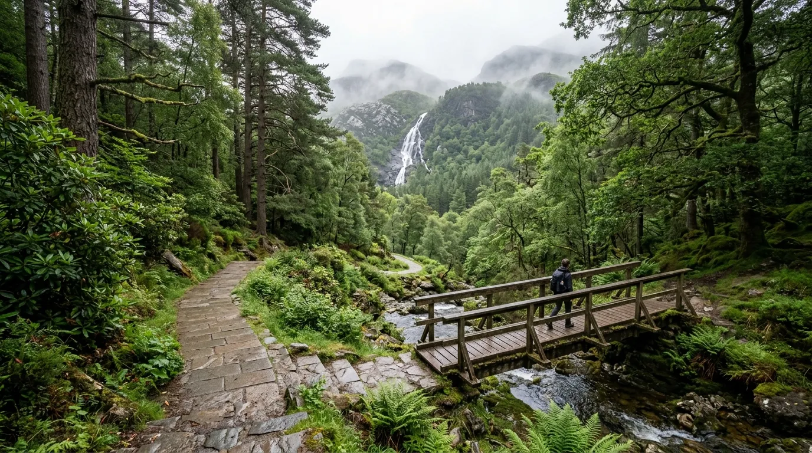

Bagi wisatawan yang melintasi jalur menuju Gunung Bromo via Malang, ada satu destinasi yang sayang untuk dilewatkan: Coban Pelangi. Air terjun ini terkenal dengan fenomena pelangi alami yang muncul dari biasan cahaya matahari pada butiran air terjun, menjadikannya salah satu air terjun Pelangi Malang paling ikonik di kawasan timur.
Lokasinya yang berada di jalur utama wisata Tumpang menuju Bromo membuat Coban Pelangi kerap dijadikan persinggahan sekaligus destinasi utama tersendiri. Simak ulasan lengkapnya berikut ini.
Coban Pelangi menawarkan kombinasi sempurna antara keindahan alam pegunungan, fenomena pelangi yang unik, serta berbagai aktivitas seru seperti river tubing, semuanya di jalur strategis menuju Bromo.
Sekilas Tentang Coban Pelangi
Coban Pelangi terletak di Desa Gubugklakah, Kecamatan Poncokusumo, Kabupaten Malang, Jawa Timur, berada di kawasan dekat Taman Nasional Bromo Tengger Semeru pada ketinggian sekitar 1.400 meter di atas permukaan laut. Suhu udara di kawasan ini berkisar antara 18-23 derajat Celsius, sehingga terasa cukup dingin sepanjang hari, terutama pada pagi dan sore.
Jarak Coban Pelangi dari pusat Kota Malang sekitar 32 km ke arah timur, dengan waktu tempuh kurang lebih 1 sampai 1,5 jam menggunakan kendaraan pribadi. Rute yang umum ditempuh adalah menuju Kecamatan Tumpang terlebih dahulu, dilanjutkan ke arah Poncokusumo, kemudian menuju Desa Gubugklakah hingga tiba di area parkir Coban Pelangi. Karena berada tepat di jalur utama menuju Bromo dari arah Malang, wisatawan yang bepergian menggunakan jeep dari Pasar Tumpang menuju Bromo maupun Semeru hampir pasti melewati lokasi air terjun ini.
Kenapa Disebut Coban Pelangi?
Nama Coban Pelangi berasal dari fenomena alam yang terjadi saat cahaya matahari menembus butiran embun dari percikan air terjun, sehingga membentuk pelangi kecil yang bisa dilihat langsung oleh pengunjung. Fenomena ini paling sering terlihat pada rentang waktu tertentu di siang hari saat sinar matahari cukup terik dan posisinya pas dengan arah percikan air.
Momen melihat pelangi alami ini menjadi daya tarik utama yang membedakan Coban Pelangi dari air terjun lain di Malang. Meski begitu, kemunculan pelangi sangat bergantung pada kondisi cuaca dan intensitas cahaya matahari, sehingga tidak selalu bisa dipastikan muncul setiap kunjungan. Waktu terbaik untuk berkesempatan melihat fenomena ini umumnya sekitar pukul 10.00 hingga 14.00 WIB.
Keindahan Air Terjun dan Suasana Pegunungan
Coban Pelangi memiliki pesona alam khas pegunungan, dengan pintu masuk yang berada di atas tebing setinggi kurang lebih 100 meter. Dari pintu masuk, pengunjung perlu berjalan kaki menyusuri jalan setapak menurun yang sudah dipaving serta melintasi jembatan sepanjang sekitar 1,5 km untuk mencapai area air terjun.
Sepanjang perjalanan, pengunjung akan disuguhi pemandangan hutan pegunungan yang masih asri, udara sejuk khas dataran tinggi, serta suara gemericik sungai yang mengalir dari kawasan hulu. Meski aksesnya menurun dan cukup jauh, jalur yang sudah tertata rapi membuat perjalanan tetap nyaman dilalui berbagai kalangan usia, meski tetap membutuhkan stamina yang cukup, terutama saat perjalanan kembali yang menanjak.
Debit air terjun tergolong deras dengan arus yang cukup kuat, sehingga pengunjung tidak diperbolehkan berenang atau bermain air langsung di bawah air terjun. Sebagai gantinya, area bermain air dibatasi hanya pada radius sekitar 50 meter dari titik jatuhnya air terjun demi alasan keselamatan.

Aktivitas Seru di Coban Pelangi
Selain menikmati pemandangan air terjun dan berburu momen pelangi, Coban Pelangi juga menawarkan berbagai aktivitas menarik lain, di antaranya:
- River tubing, yaitu aktivitas menyusuri aliran sungai menggunakan ban pelampung, menjadi salah satu wahana favorit terutama bagi anak muda yang mencari sensasi berpetualang di air
- Camping, tersedia area camping di sekitar kawasan bawah dekat air terjun bagi yang ingin bermalam menikmati suasana pegunungan
- Trekking ringan, menyusuri jalur setapak menurun sambil menikmati pemandangan hutan dan sungai pegunungan
- Berburu foto, dengan latar air terjun, jembatan, dan suasana hutan pegunungan yang asri
- Bersantai di warung sekitar, yang tersedia di area bawah dekat air terjun sebagai tempat beristirahat sebelum atau sesudah trekking
Aktivitas river tubing biasanya dikenakan biaya terpisah di luar tiket masuk, sehingga penting untuk menanyakan langsung ke petugas atau operator wahana di lokasi sebelum mencobanya.
Harga Tiket Masuk dan Jam Operasional
Berikut rincian biaya terbaru yang perlu kamu siapkan:
Coban Pelangi umumnya buka setiap hari mulai pukul 07.00 atau 08.00 WIB hingga pukul 17.00 WIB. Pada musim penghujan, jam kunjungan terkadang dibatasi lebih awal, sekitar pukul 16.00 WIB, sebagai antisipasi risiko air bah dari kawasan hulu pegunungan.
Catatan: Harga tiket dan jam operasional dapat berubah sewaktu-waktu mengikuti kebijakan pengelola, sangat disarankan untuk mengecek informasi terbaru sebelum berangkat, terutama jika bertepatan dengan musim liburan panjang.
Rute Menuju Coban Pelangi
Dari pusat Kota Malang, rute menuju Coban Pelangi dapat ditempuh dengan mengarahkan kendaraan menuju Kecamatan Tumpang melalui Jalan Raya Tumpang. Setelah tiba di Tumpang, perjalanan dilanjutkan ke arah Poncokusumo, kemudian menuju Desa Gubugklakah yang juga merupakan jalur utama menuju Gunung Bromo via Malang.
Bagi wisatawan yang menggunakan transportasi umum, rute yang bisa ditempuh adalah naik angkot dari Terminal Arjosari menuju Pasar Tumpang, kemudian dilanjutkan dengan menyewa ojek atau mobil jeep menuju lokasi Coban Pelangi. Setibanya di area parkir, pengunjung memiliki opsi untuk berjalan kaki menyusuri jalur setapak menuju air terjun, atau menggunakan jasa ojek motor yang tersedia di lokasi dengan tarif tambahan.
Tips Berkunjung ke Coban Pelangi
- Datang sekitar pukul 10.00-14.00 WIB untuk memperbesar peluang menyaksikan fenomena pelangi di air terjun.
- Gunakan pakaian hangat, mengingat suhu di kawasan ini cukup dingin karena berada di ketinggian sekitar 1.400 mdpl.
- Siapkan fisik yang cukup, karena jalur menuju air terjun cukup panjang dan menurun, sehingga perjalanan pulang akan terasa menanjak.
- Jangan berenang langsung di bawah air terjun, karena arusnya deras dan berbahaya; manfaatkan area bermain air yang telah ditentukan pengelola.
- Bawa uang tunai secukupnya, terutama jika ingin mencoba aktivitas tambahan seperti river tubing yang biasanya dikenakan biaya terpisah.
- Cek kondisi cuaca sebelum berangkat, terutama saat musim penghujan, karena jam kunjungan bisa dibatasi lebih awal demi keselamatan.
- Manfaatkan lokasi ini sebagai persinggahan jika sedang dalam perjalanan menuju Bromo atau Semeru via jalur Tumpang.
Kesimpulan
Coban Pelangi menjadi bukti bahwa keindahan alam Malang tidak melulu soal pantai, tetapi juga menyimpan pesona air terjun yang tak kalah memesona di kawasan pegunungan. Sebagai salah satu air terjun Pelangi Malang yang letaknya strategis di jalur wisata Tumpang menuju Bromo, Coban Pelangi menawarkan kombinasi sempurna antara keindahan alam, fenomena pelangi yang unik, serta berbagai aktivitas seru seperti river tubing dan trekking. Dengan harga tiket yang tetap terjangkau, tidak heran jika air terjun ini terus menjadi favorit wisatawan yang melintasi jalur Malang menuju Bromo.
Catatan: Harga tiket, biaya parkir, dan kebijakan pengelolaan Coban Pelangi dapat berubah sewaktu-waktu. Disarankan untuk mengecek informasi terbaru sebelum berangkat.